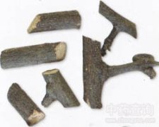

九龙藤

拼音
Jiǔ Lónɡ Ténɡ
别名
过岗龙（《生草药性备要》），乌郎藤（《中国树木分类学》），乌藤、串鼻藤（《广西中兽医药植》），燕子尾（《南宁市药物志，），猪蹄叉、羊蹄又（《广西中草药，），黄开口、子燕藤、五里蘑、双木蟹（《浙江民间常用草药》），夜合草、干打捶、九牛燥、五花血藤；马脚藤（《湖南药物志》），飞扬藤、羊蹄风（《广西药植名录》）。
来源
为豆科植物龙须藤的茎。随时可采，采后切片，晒干。
生境分布
生于沟边、山谷、河边、疏林下或灌木林中。分布广东、广西、福建、台湾、浙江、湖北、湖南、江西、贵州等地。
药材特点
常绿攀援本质藤本，高2～7米。幼枝浅黄色，密布锈黄色皮孔，嫩枝、花序、叶背均被短茸毛，卷须2个对生或1个。单叶互生，卵圆形，矩圆形或心脏形，长5～9厘米，宽2.5～5厘米，半革质，前端分裂，或凹头，全缘，基部圆形或微凹或耳廓形；叶柄长22～40毫米，两端膨大；托叶针状，早脱，秃净。总状花序，顶生或腋生；萼简5裂，长三角状，表面具短茸毛；花瓣5片，白色，离生；雄蕊10，3枚较粗壮，花药2室，纵裂，丁字药；雌蕊1，被很短茸毛，花柱成喙状。荚果表面有细网状纹，熟时开裂。种子黑色，扁圆形。花期9～10月。果期翌年1～2月（广西）。
性状
本品呈圆柱形，稍扭曲。表面粗糙，灰棕色或灰褐色，具不规则皱沟纹。质坚实，难折断，切断面皮部棕红色，木部浅棕色，有2-4圈深棕红色环纹，习称“鸡眼圈纹”，针孔状导管细而密。气无，味微涩。 以藤茎粗，断面“鸡眼圈纹”明显者为佳。
性味
《南宁市药物志》；"苦辛，平，无毒。"
功能主治
《南宁市药物志》："祛风，去瘀，止痛。治风湿骨痛，跌打接骨。"
用法用量
内服：煎汤，2～5钱（鲜用1～2两）。
化学成分
根及茎皮含鞣质20.76％。
药理作用
1：无药理作用
摘录
《中药大辞典》